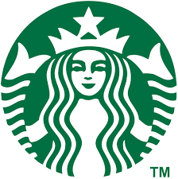
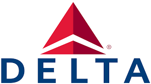

My Passions & Interests
Photography


I first discovered the world of photography when I was gifted a digital camera, and took a few classes on it with my grandma when I was 12 years old. Ever since then, I have been hooked on the hobby. I started out by taking nature photos, but eventually evolved into more complex photographic styles.
One of my recent favorite styles is long exposure photography. By turning the exposure time up when in a dark environment, you can capture so much more detail then you normally would. Using strategies like this, you can capture amazing photos of the stars, northern lights, and my personal favorite: light painting.
Light painting is when you use a light source, such as a flashlight, to "paint" within your photo. As the lens is exposed to the light, it captures the light as you move it, creating a really cool effect, such as in the first photo on this page. For this photo, I put glow sticks on and under the car, and used the flashlight on my phone to light up the front of the car, and draw the design in the background.
Outdoor Exploration


Ever since I can remember, I have always loved the outdoors. Whether it was the woods behind my house, my neighborhood park, or going to the beach, I couldn't get enough. As I got older, I eventually started biking around my nrighborhood, which eventually evolved into mountain biking.
In 2020, during the COVID-19 lockdown, my older brother and I decided to build mountain biking trails in the woods behind our house. Any time it was light out, and I wasn't working on schoolwork or chores, we were out there building the trails. After hundreds of hours combined, our very own backyard trail system was complete. We even named it and created trail signage!
Mountain biking is certainly not the only outdoor activity I enjoy. I love hiking, and am always down to explore new areas. I love traveling, and one of my favorite things to do when traveling to an area with ocean access is surfing! I am no pro by any means, nor am I good at balancing on a surfboard, but I love the challenge and the feeling of finally catching and riding a fun wave.
Career Goals & Dream Companies
I'm actively pursuing opportunities with innovative organizations where I can apply my skills and grow professionally.

Starbucks
Why I would pursue a career with Starbucks
I currently work at Starbucks as a barista, and I enjoy the company culture, but also feel that I could make great change within the company. I enjoy their focus on the customer experience, and their commitments to sustainable sourcing and community involvement. I also appreciate their commitment to employee development and growth oppportunities. I feel that I could use my professional and leadership skills to improve experiences both on the retail employee side and customer experience, leveraging my experience at the bottom and as a customer.
My Qualifications
I have spend almost four years working retail, and am approaching one full year at Starbucks. Throughout my time as a barista, I have learned as much as I can about the inner workings of the company as a whole. When I imagine a potential career at Starbucks, I see myself in a role that focuses on improving the employee experience. This allows for more positive and genuine customer interactions, more efficient employees, and a better overall workplace environment and coffeehouse experience.

Delta Air Lines
Why I would pursue a career with Delta
I admire companies with a strong commitment to customer service, innovation, and sustainability. Delta shares those same values, which is why I choose to travel with Delta whenever possible. They are constantly expanding their offerings, and have built a global network. I aspire to contribute to a company that is consistent with those personal values.
My Qualifications
My leadership experience and skills would really benefit my potential career at Delta. I have always been fascinated by the aviation industry, and have even taken behind-the-scenes tours of their facilities at one of their major hubs in Minneapolis St. Paul International Airport in Minneapolis, MN. That gives be a unique perspective and advantage over other possible employees, as I would be able to hit the ground running with an understanding of their internal operations on day one.
My Values
Community Wellbeing
The wellbeing of employees and the communities they serve is a top priority for me, and it is what drives me to seek out opportunities that allow me to improve wellbeing within the employees and their communities.
Integrity
I believe that companies should always operate with transparency and honesty. It build stronger relationships with customers when a company is honest and shows that they care.
Sustainability
Our planet is one of a kind, and we are in danger of ruining the environment for future generations of humans and other animals. I believe a focus on environmental sustainability is essental for the future of our planet and its various ecosystems.